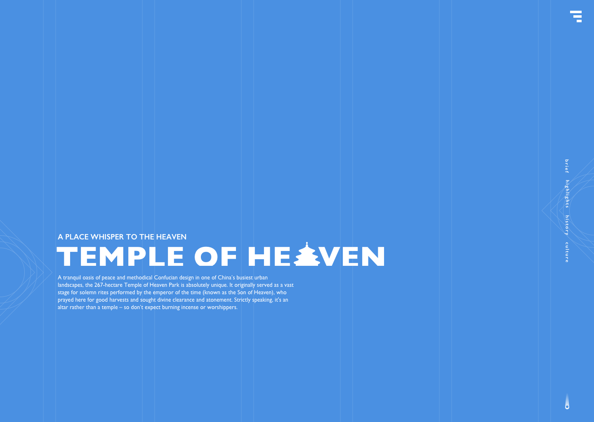
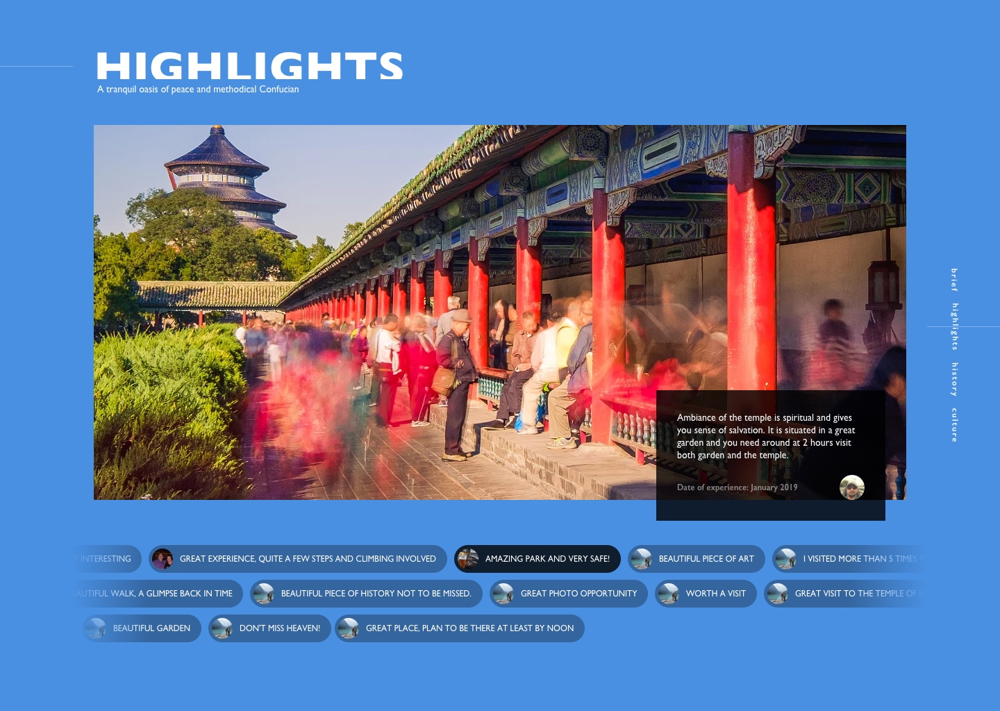
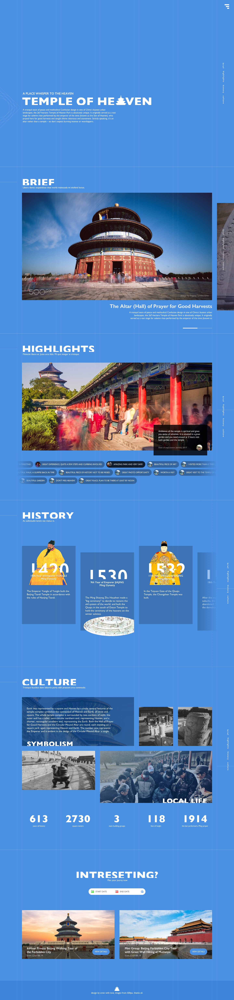

The Temple of Heaven
Personal
A Personal Redesign Project
SUMMARY
The Temple of Heaven is my favourite senic spot in Beijing. But as you know, the official website is not as good as the architecture. For the love of the chinese culture and the style of royal buildings, I tried to re-design a landingpage of Temple of Heaven.
这是一个 one-page 的 landingpage，通过简洁的布局和高质量的内容引起用户的兴趣，分为几个模块展示天坛这个著名的景点。并且最终引导到选购旅游产品的CTA，从而形成用户的转化。

这个页面是响应式布局，由于是one-page的页面，所有内容都在一个页面呈现。为了让更多内容在页面中体现，可以通过左右滑动、跑马灯（弹幕）等交互让页面内容的纵深感增加，以丰富内容的展示。简化结构，避免过多的分栏，这样在屏幕缩放针对不同屏幕分辨率的时候就有较高的自由度。
首页的设计采用纯色底来呈现。通过辅助图形和线显示出页面结构。页面显得非常规整。

Highlights 这个模块，用户的留言将更加直观地体现景点的印象。对于数据结构上的设计，图片是景点的高清图片，每个图片是景点中的一部分，而此图下方是对这个spot的用户评论。
